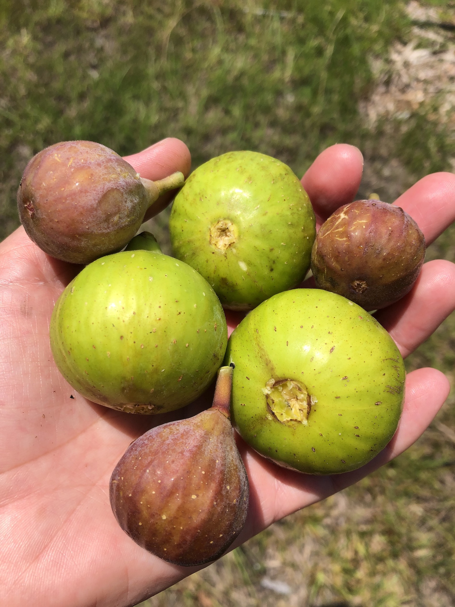

Flying Fig Farm
Family farm in Awendaw, SC

About Us
Flying Fig Farm is a woman-owned, family-operated farm, located on 4 acres of prime farmland in Awendaw, SC. We believe growing our produce and plants locally with sustainable practices will improve the health of our environment, pollinators and our community. Our farm specializes in fruit trees and bushes, perennial vegetables, and native plants.
Plant List
A list of all plants we sell.